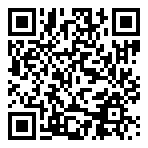

Séquence 8 : Chaîne d'énergie et chaîne d'information
Notions essentielles, synthèse et vocabulaire de la séquence.
🔗 Lien direct vers cette page

Scanne le QR code, ou saisis ce code sur la page d'accès direct du site.
1. La chaîne d'énergie : de l'entrée jusqu'à l'action
Tout objet technique qui produit une action a besoin d'énergie. Cette énergie entre dans l'objet, traverse plusieurs composants, change de forme, et ressort sous forme d'action utile. L'ensemble de ces composants forme la chaîne d'énergie.
Elle comporte quatre maillons, toujours dans le même ordre.
- Alimenter : fournir l'énergie au départ. Panneau photovoltaïque, batterie, prise et cordon secteur, groupe électrogène.
- Distribuer : laisser passer l'énergie ou la couper, et choisir vers où elle va. Interrupteur général, partie puissance de la carte électronique.
- Convertir : changer la forme de l'énergie. Le moteur change l'énergie électrique en mouvement. Le bloc de LED change l'énergie électrique en lumière. Le composant qui convertit s'appelle un actionneur.
- Transmettre : déplacer l'énergie jusqu'à l'endroit utile, sans changer sa forme. Le pignon et la crémaillère transmettent le mouvement du moteur au vantail. La turbine et le tuyau transmettent l'énergie à l'eau. Les pales du ventilateur transmettent le mouvement à l'air. Le réflecteur du lampadaire envoie la lumière vers la rue.
Tous les objets techniques ont une chaîne d'énergie, y compris les objets les plus simples. Dans le pousse-pousse, la source d'énergie est la force musculaire de la personne qui tire ; les brancards et les roues transmettent cette énergie jusqu'au sol. Dans le foyer amélioré, la source d'énergie est le charbon ou le bois ; le foyer convertit l'énergie du combustible en chaleur, et les parois la transmettent vers la marmite.
2. La chaîne d'information : prendre un renseignement, décider, donner l'ordre
Certains objets se mettent en marche sans que personne ne les touche. Ces objets possèdent, en plus de la chaîne d'énergie, une chaîne d'information.
Elle comporte trois maillons, toujours dans le même ordre.
- Acquérir : prendre un renseignement sur l'objet ou sur son environnement. Le composant qui fait ce travail s'appelle un capteur. Le capteur de luminosité prend le renseignement « il fait nuit ». Le détecteur de mouvement prend le renseignement « quelqu'un passe ». L'interrupteur à flotteur prend le renseignement « la citerne est pleine ». Le capteur d'humidité prend le renseignement « le sol est sec ». Le récepteur de télécommande prend le renseignement « l'usager a appuyé sur un bouton ».
- Traiter : comparer le renseignement à une valeur, et décider. Ce travail est fait par l'unité de traitement, c'est-à-dire le microcontrôleur de la carte électronique. C'est le programme, écrit à l'avance, qui fixe la décision.
- Communiquer : envoyer la décision. La carte envoie l'ordre au maillon distribuer de la chaîne d'énergie. Elle peut aussi prévenir l'usager, avec un voyant, un buzzer ou un feu clignotant.
Un objet qui possède une chaîne d'information est un objet automatisé. Un objet qui n'en possède pas est un objet commandé directement par l'utilisateur.
3. Le dialogue entre les deux chaînes : l'ordre et le renseignement
Les deux chaînes ne travaillent pas séparément. Elles échangent en permanence, dans les deux sens.
De bas en haut circule le RENSEIGNEMENT. Les capteurs observent l'objet et son environnement, puis envoient ce qu'ils ont mesuré à l'unité de traitement.
De haut en bas circule l'ORDRE. L'unité de traitement a décidé ; elle envoie sa décision au maillon distribuer, qui laisse alors passer l'énergie vers l'actionneur.
C'est ce double échange qui rend l'objet automatique. Règle à retenir : la chaîne d'information commande la chaîne d'énergie. L'information ne fait rien bouger toute seule ; elle décide seulement à quel moment l'énergie doit passer.
Sur un schéma à blocs, ce dialogue est représenté par deux flèches entre les étages, l'une qui monte et l'autre qui descend. Un schéma à blocs sans ces deux flèches est un schéma incomplet : il montre deux chaînes séparées, ce qui ne correspond à aucun objet réel.
Dans certains objets, le renseignement sert à corriger l'action en cours. C'est le cas de la cellule photoélectrique du portail automatique : si elle détecte un obstacle pendant la fermeture, la carte arrête le moteur et rouvre le portail. On dit qu'il y a une boucle de retour.
4. Objet commandé par l'utilisateur, objet automatisé
La différence entre les deux se pose toujours par une seule question : QUI DÉCIDE dans cet objet ?
Si la réponse est « une personne », l'objet est commandé directement par l'utilisateur. Le ventilateur de table ne démarre que si une main tourne le bouton. Le foyer amélioré ne chauffe que si une personne allume le combustible. Le pousse-pousse n'avance que si une personne tire. Ces trois objets ont bien une chaîne d'énergie ; ce qui leur manque, c'est la chaîne d'information.
Si la réponse est « une carte électronique », l'objet est automatisé. Le lampadaire solaire de rue s'allume seul quand la nuit tombe. La pompe de rizière démarre seule quand le sol devient sec. L'alarme de la citerne d'école sonne seule quand le niveau d'eau est trop haut.
Attention à un cas fréquent : la télécommande. Quand une personne appuie sur la télécommande du portail ou du ventilateur de plafond, elle donne un ordre, mais cet ordre est reçu par un récepteur, puis traité par une carte. La télécommande appartient donc au maillon acquérir de la chaîne d'information. L'objet reste automatisé, car c'est la carte qui commande réellement le moteur.
Attention aussi à ne pas confondre la télécommande et l'interrupteur. Dans un interrupteur passe le courant qui alimente l'actionneur : il est au maillon distribuer, dans la chaîne d'énergie. Dans une télécommande ne passe aucun courant de puissance : elle envoie seulement un signal.
5. Deux règles de classement à ne jamais oublier
Première règle, la règle générale : on classe un composant selon CE QU'IL PRODUIT, pas selon ce qu'il consomme. La carte électronique consomme de l'électricité, mais elle produit une décision : elle est dans la chaîne d'information. La batterie produit de l'énergie : elle est dans la chaîne d'énergie.
Deuxième règle, la règle de la lampe. Une lampe pose un problème, parce qu'elle transforme bien l'énergie électrique en lumière. Il faut donc regarder à quoi sert cette lumière.
: Si la lumière est l'action utile de l'objet, la lampe est dans la chaîne d'énergie, au maillon convertir. C'est le cas du bloc de LED du lampadaire solaire : le lampadaire est fait pour éclairer la rue.
: Si la lumière sert seulement à prévenir une personne, la lampe s'appelle un voyant, et elle est dans la chaîne d'information, au maillon communiquer. C'est le cas du voyant de la citerne, du feu orange du portail et du voyant de marche de la pompe. Si on enlève ces lampes, l'objet fait encore son travail.
Dernier point : un composant peut faire deux travaux. La carte électronique décide, au maillon traiter, et elle laisse passer ou coupe le courant du moteur, au maillon distribuer. Elle apparaît alors dans les deux chaînes. Ce n'est pas une erreur, à condition de l'expliquer par une phrase.
6. Le schéma à blocs : représenter les deux chaînes
Le schéma à blocs est la représentation normalisée des deux chaînes. Il se lit de gauche à droite, et il se construit toujours de la même manière.
Deux étages superposés. En bas, la chaîne d'énergie, tracée au trait plein. En haut, la chaîne d'information, tracée au trait en pointillés. Cette distinction ne repose jamais sur une couleur, pour rester lisible sur une photocopie en noir et blanc.
Un bloc par maillon. Quatre blocs en bas, trois blocs en haut. Le nom du maillon est écrit à l'intérieur du bloc. Le nom du composant réel est écrit juste en dessous du bloc. Un schéma qui ne cite aucun composant réel n'a aucune valeur : il montre seulement que les mots ont été appris par cœur.
Quatre flèches obligatoires. Une flèche entrante à gauche de l'étage du bas, légendée par l'énergie d'entrée. Une flèche sortante à droite de l'étage du bas, légendée par l'action produite. Une flèche qui monte, légendée « renseignement ». Une flèche qui descend, légendée « ordre ».
⭐ À retenir
- La chaîne d'énergie comporte quatre maillons dans l'ordre : alimenter, distribuer, convertir, transmettre.
- La chaîne d'information comporte trois maillons dans l'ordre : acquérir, traiter, communiquer.
- Tous les objets techniques ont une chaîne d'énergie. Seuls les objets automatisés ont, en plus, une chaîne d'information.
- La chaîne d'information commande la chaîne d'énergie : elle lui envoie un ordre, et elle reçoit d'elle un renseignement.
- Un capteur prend un renseignement. Un actionneur transforme l'énergie pour produire une action. L'unité de traitement décide.
- Convertir, c'est CHANGER la forme de l'énergie. Transmettre, c'est la DÉPLACER sans la changer.
- On classe un composant selon ce qu'il produit, pas selon ce qu'il consomme.
- Règle de la lampe : lumière utile, chaîne d'énergie ; lumière qui prévient une personne, chaîne d'information, maillon communiquer.
- Un interrupteur laisse passer ou coupe le courant : chaîne d'énergie. Une télécommande envoie seulement un signal : chaîne d'information.
- Un schéma à blocs sans les deux flèches entre les étages est un schéma incomplet.
📖 Vocabulaire
| Terme | Définition |
|---|---|
| Chaîne d'énergie | Ensemble des composants qui reçoivent, transportent et transforment l'énergie, depuis l'entrée de l'objet jusqu'à l'action produite. Exemple : dans le lampadaire solaire, le panneau photovoltaïque, la batterie, les câbles, l'interrupteur général et le bloc de LED. |
| Chaîne d'information | Ensemble des composants qui prennent un renseignement, le traitent, et envoient un ordre à la chaîne d'énergie. Exemple : dans le lampadaire solaire, le capteur de luminosité, le détecteur de mouvement et la carte électronique. |
| Capteur | Composant qui prend un renseignement sur l'objet ou sur son environnement, et qui le transforme en signal électrique. Il appartient au maillon acquérir. Exemples : capteur de luminosité, capteur d'humidité du sol, interrupteur à flotteur, capteur de température, récepteur de télécommande. |
| Actionneur | Composant qui transforme l'énergie pour produire l'action utile de l'objet. Il appartient au maillon convertir de la chaîne d'énergie. Exemples : le moteur d'une pompe, le bloc de LED d'un lampadaire, le moteur d'un ventilateur. |
| Voyant | Petite lampe dont la lumière ne sert pas à faire le travail de l'objet, mais seulement à prévenir une personne. Il appartient au maillon communiquer de la chaîne d'information. Exemples : le voyant de la citerne d'école, le feu orange du portail, le voyant de marche de la pompe. |
| Unité de traitement | Composant qui compare les renseignements reçus et qui décide. C'est le microcontrôleur de la carte électronique. Il appartient au maillon traiter. C'est lui qui remplace la main de l'utilisateur dans un objet automatisé. |
| Source d'énergie | Ce qui fournit l'énergie au départ de la chaîne d'énergie. Elle correspond au maillon alimenter. Exemples : panneau photovoltaïque, batterie, prise et cordon secteur, groupe électrogène, force musculaire, charbon de bois. |
| Le secteur | Le réseau électrique de la maison ou de l'école, celui qui arrive à la prise murale. C'est une source d'énergie. Quand le courant est coupé, les objets branchés sur le secteur ne fonctionnent plus. |
| Convertir | Changer la forme de l'énergie. Le moteur convertit l'énergie électrique en énergie mécanique. La LED convertit l'énergie électrique en lumière. |
| Transmettre | Déplacer l'énergie jusqu'à l'endroit utile, sans changer sa forme. Le pignon et la crémaillère transmettent le mouvement du moteur au vantail. Le tuyau transmet l'énergie de la pompe à l'eau. Les pales transmettent le mouvement à l'air. |
| Objet automatisé | Objet technique qui décide seul de son fonctionnement, grâce à sa chaîne d'information. Une carte électronique y remplace la décision de l'utilisateur. Exemples : lampadaire solaire à détecteur, portail automatique, pompe de rizière à capteur d'humidité. |
| Schéma à blocs | Représentation d'un objet technique en deux étages : la chaîne d'énergie en bas, au trait plein, la chaîne d'information en haut, au trait en pointillés. Un bloc par maillon, le composant écrit sous le bloc, et quatre flèches : l'énergie qui entre, l'action qui sort, l'ordre qui descend, le renseignement qui monte. |